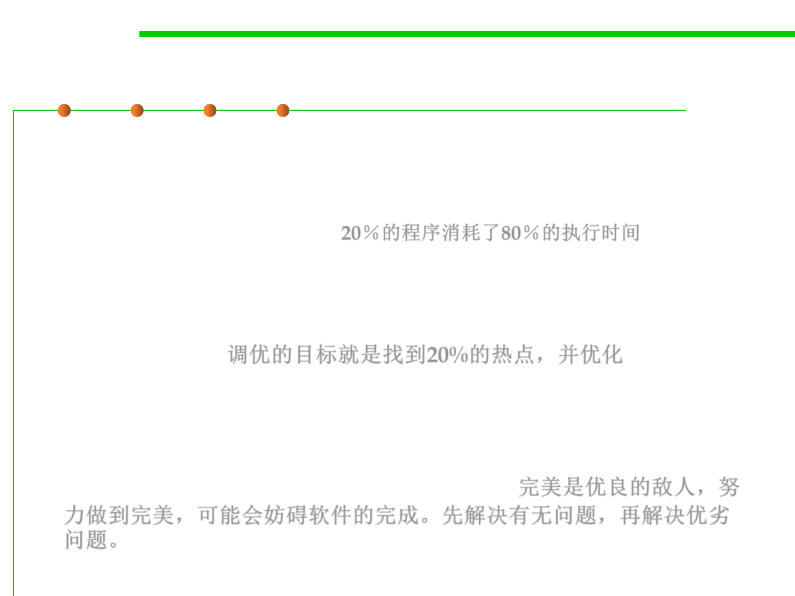

8.3 Code Tuning for Performance Optimization
The Pareto Principle of program optimization
▪ The Pareto Principle (80/20 rule) states that you can get 80 percent
of the result with 20 percent of the effort.
– Barry Boehm reports that 20 percent of a program’s routines consume 80
percent of its execution time. 20％的程序消耗了80％的执行时间
– Donald Knuth found that less than 4 percent of a program usually
accounts for more than 50 percent of its run time.
▪ The target of code-tuning is to find hotspots (the 20%) and
optimize them. 调优的目标就是找到20%的热点，并优化
▪ “The best is the enemy of the good”. Working toward perfection
may prevent completion. Complete it first, and then perfect it. The
part that needs to be perfect is usually small. 完美是优良的敌人，努
力做到完美，可能会妨碍软件的完成。先解决有无问题，再解决优劣
问题。